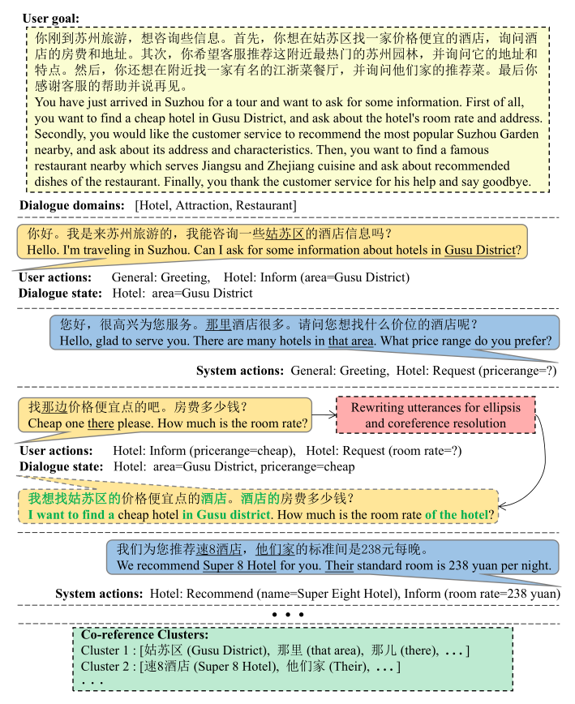
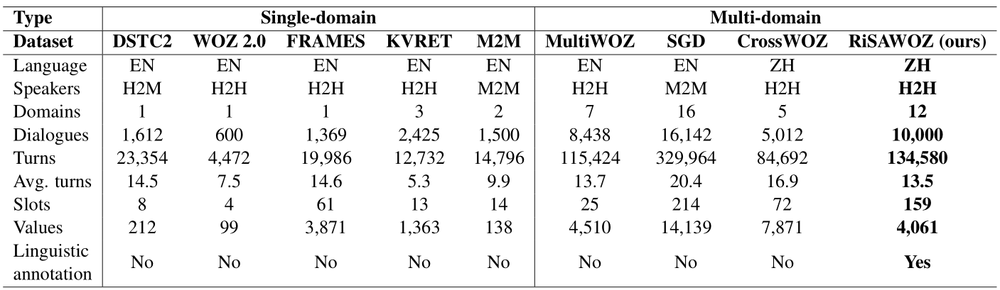
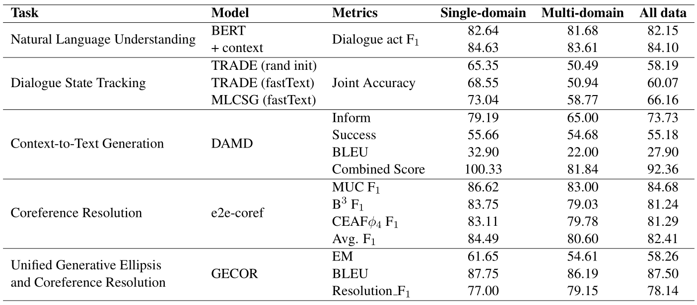

Abstract
In order to alleviate the shortage of multi-domain data and to capture discourse phenomena for task-oriented dialogue modeling, we propose RiSAWOZ, a large-scale multi-domain Chinese Wizard-of-Oz dataset with Rich Semantic Annotations. RiSAWOZ contains 11.2K human-to-human (H2H) multi-turn semantically annotated dialogues, with more than 150K utterances spanning over 12 domains, which is larger than all previous annotated H2H conversational datasets. Both single- and multi-domain dialogues are constructed, accounting for 65% and 35%, respectively. Each dialogue is labeled with comprehensive dialogue annotations, including dialogue goal in the form of natural language description, domain, dialogue states and acts at both the user and system side. In addition to traditional dialogue annotations, we especially provide linguistic annotations on discourse phenomena, e.g., ellipsis and coreference, in dialogues, which are useful for dialogue coreference and ellipsis resolution tasks. Apart from the fully annotated dataset, we also present a detailed description of the data collection procedure, statistics and analysis of the dataset. A series of benchmark models and results are reported, including natural language understanding (intent detection & slot filling), dialogue state tracking and dialogue context-to-text generation, as well as coreference and ellipsis resolution, which facilitate the baseline comparison for future research on this corpus.
RiSAWOZ Paper (Quan et al. EMNLP '20)
Data statistics of RiSAWOZ
 The average numbers of turns and coreference clusters are for each dialogue. The average numbers of tokens and dialogue acts are for each turn. U-acts and s-acts represent user and system acts respectively.
The average numbers of turns and coreference clusters are for each dialogue. The average numbers of tokens and dialogue acts are for each turn. U-acts and s-acts represent user and system acts respectively.
 Statistics on utterances containing ellipsis and coreference.
Statistics on utterances containing ellipsis and coreference.
Getting Started
The RiSAWOZ dataset is available:
License

This work is licensed under a Creative Commons Attribution-NonCommercial 4.0 International License
Have Questions?
For any issue, email to dyxiong@tju.edu.cn.
An example of RiSAWOZ
 A dialogue example spanning over multiple domains. We show dialogue annotations and necessary linguistic annotations (green words for ellipsis resolution and green box for coreference clusters) for each user utterance (in yellow callout) and system utterance (in blue callout).
Comparison of RiSAWOZ to others
 Comparison of our dataset to other task-oriented dialogue datasets (training set). H2H, H2M, M2M represent human-to-human, human-to-machine, machine-to-machine respectively.
Benchmark
 Performance of benchmark models on single-domain, multi-domain and all dialogues of test set.
Citations
If you use RiSAWOZ in your work, please cite our paper. The bibtex is listed below:
@inproceedings{quan-etal-2020-risawoz,
title = "{R}i{SAWOZ}: A Large-Scale Multi-Domain {W}izard-of-{O}z Dataset with Rich Semantic Annotations for Task-Oriented Dialogue Modeling",
author = "Quan, Jun and
Zhang, Shian and
Cao, Qian and
Li, Zizhong and
Xiong, Deyi",
booktitle = "Proceedings of the 2020 Conference on Empirical Methods in Natural Language Processing (EMNLP)",
month = nov,
year = "2020",
address = "Online",
publisher = "Association for Computational Linguistics",
url = "https://www.aclweb.org/anthology/2020.emnlp-main.67",
pages = "930--940",
}